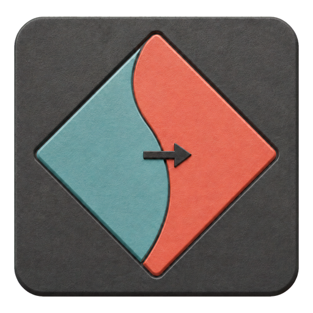

Interactive App
Explore policies, replay rollouts, and generate counterfactual commands in the complete local interactive app.
Download for Windows Windows 10/11 · 64-bit · 351 MB · no installation Interactive app repository
Research project
Command-space counterfactual explanations for Pareto-conditioned reinforcement-learning policies.
Inside the interactive app
The one-file Windows interactive app bundles 15 multi-objective environments and 30 pretrained return- and horizon-conditioned policies. It opens in the browser while all computation and data remain on the user’s computer.
Explore policies, replay rollouts, and generate counterfactual commands in the complete local interactive app.
Download for Windows Windows 10/11 · 64-bit · 351 MB · no installation Interactive app repositoryThe concise research paper describing the method, experiments, and results.
Download paper PDF · 689 KB Paper repositoryThe full thesis with background, implementation details, analysis, and discussion.
Download status Thesis repositoryThe interactive app is safe to run locally and does not upload your data.
The interactive app supports research examples, decision cards, environment renderings, and reproducible rollout comparisons. Its intended role is to help test whether people understand and can use an explanation—not merely whether the method satisfies a technical metric.
Interpretation boundary. A command counterfactual is deliberately local: ΔR is a sufficient command change that crosses the learned policy’s action boundary at one fixed state. It means the foil action becomes preferred there; it does not guarantee the complete requested return.
Non-experts would compare a well-trained and poorly trained agent under four conditions: no explanation, action probabilities, a command counterfactual, or a counterfactual with rollout evidence.
Participants would predict an action, select a foil command, identify the better-trained agent, and rate their confidence. Failed auditions can reveal confident over-trust.
Measures: accuracy, response time, confidence, and acceptance of failed rollouts.
A short questionnaire would show static decision cards containing the state, plainly named objectives, current command and action, foil action, returned Rcf, and ΔR.
Participants would see either numbers alone or the same values with a one-sentence explanation, then identify which objectives must change and select the justified fixed-state conclusion.
Measures: answer accuracy, completion time, confidence, and understanding of local scope.
Participants would inspect a short rollout either with states and actions alone or with the thesis’s low-to-high state–command influence signal. At every decision state, this signal rates how strongly the selected action depends on the current command.
They would identify the highest- and lowest-influence states: where changing the command is most and least likely to alter the action. The existing dense command scan supplies the reference ranking.
Measures: selection accuracy and response time with versus without the influence signal.
Whether you want to discuss this project, any of my research, a potential collaboration, or a new idea, feel free to get in touch.